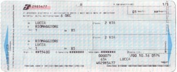

Scusi, mi può dire ...
Attività 2 Biglietti, prego

Train travel is an efficient way to get around Italy as its extensive railway system links to nearly every part of the country. In fact, it’s even possible to travel by train from Milano to the island of Sicilia (the train is loaded onto a ferry to cross the Strait of Messina).
To find out more about the different types of trains that service Italy’s railway system, clicca qui.
Christian purchased un biglietto chilometrico back home for train travel around Italy. He was advised that it was the best discount train travel per le sue esigenze.
Listen to his experience a bordo del treno on his way to Firenze.
Answer the following questions in inglese.
- What type of ticket does Christian have?
A kilometric ticket. - What is the problem with the ticket?
He needs a supplement as well as his kilometric ticket on the Intercity train. - What penalty does Christian face?
He faces a fine for not having purchased the required supplement. - What is the final outcome?
The conductor makes him pay the cost of the supplement only, as he realised that Christian had made a genuine mistake.
Alla biglietteria
Christian decide d’andare a Lucca per il fine settimana. Ha sentito dire che è una cittadina caratteristica e che merita una visita.
Va alla biglietteria per informarsi. È importante chiedere se occorre il supplemento. Non vuole ripetere la stessa scena dell’ultimo viaggio.
Complete the following conversation.
Before doing this attività it will be a good idea to view parole e frasi utili related to train travel.
Clicca qui.
Listen to what l’impiegata asks.
Imagine that you are Christian. How will you interact with l’impiegata?
Click on the cues provided to help you complete the dialogue.
| Alla biglietteria | |
| Impiegata | Buongiorno, mi dica. |
| Christian |
Good morning. I would like to travel to Lucca tomorrow morning. |
| Impiegata | A che ora vuole partire? |
| Christian |
Around 9.00 or 9.30. |
| Impiegata | Vediamo, c’è ne uno che parte alle 9.59. |
| Christian |
Is it direct or do you need to change? |
| Impiegata | Bisogna cambiare a Viareggio. |
| Christian |
At what time is the connecting train? |
| Impiegata | Arriva a Viareggio alle 10.59 e poi si prende il rapido delle 11.40 che arriva a Lucca alle 11.57. |
| Christian |
It’s too late. What time does the train before 9.59 leave? |
| Impiegata | C’è il diretto delle 8.57 che arriva a Viareggio alle 9.33. C’è subito la coincidenza ... vediamo ... sì alle 9.40. Arriva a Lucca alle 9.57. |
| Christian |
Yes, that’s perfect. I have a kilometric ticket. |
| Impiegata | Va bene. Allora vediamo il numero di chilometri. Solo andata o andata e ritorno? |
| Christian |
Only one way. Do I need to pay a supplement? |
| Impiegata | No, con questo treno no. Solo andata ... sono sessantadue chilometri. Mi dia il biglietto per cortesia così scrivo i dettagli. |
| Christian |
Of course, here it is. |
| Impiegata | A proposito, quando pensa di ritornare? |
| Christian |
Sunday afternoon, about five o’clock. |
| Impiegata | Allora, conviene fare il biglietto adesso. Evita di fare la coda in biglietteria di nuovo. |
| Christian |
Is it possible? |
| Impiegata | Sì certo. Allora vediamo l’orario. C’è un treno da Lucca alle sedici e trenta, oppure il prossimo è alle diciassette e trenta. |
| Christian |
The 17.30 one is better. What type of train is it? |
| Impiegata | È lo stesso dell’andata. Bisogna cambiare a Viareggio, ma c’è subito la coincidenza. |
| Christian |
Perfect. Thanks for your suggestion. |
| Impiegata | Prego. Ecco il Suo biglietto. È tutto a posto sia per l’andata sia per il ritorno. Buon viaggio e buon soggiorno a Lucca. |
| Christian |
Thanks again. Very kind. |
You need to use the formal/polite language (Lei form) in this situation.
L’impiegata uses the formal address when she speaks to Christian.
Use a highlighter to identify examples of this formal form of address in the conversation.

Go to Elementi linguistici – Pronomi informali e formali if you need to review this language point.
How did you go? To find out, listen to the complete dialogue.
Once you have listened to the complete dialog, clicca qui to view the script.
Tocca a te!
How will you interact with l’impiegata?
Listen to what l’impiegata says again and write your personal response in this worksheet.
Asking for train information at la stazione can be very time consuming and possibly frustrating, especially at large, busy stations.
Lo sai che you can access a lot of information yourself. This will avoid waiting in long queues and, at times, even running the risk of missing the train.
Clicca qui for tips on how to do this.
Viaggiare in treno
- Puoi ottenere un orario alla stazione, all’ufficio del turismo o all’agenzia di viaggi.
- Puoi trovare informazioni online sul sito di Trenitalia http://www.trenitalia.com.
Seleziona Orari e acquisto.
You will be able to access the details you require when you provide information for the following kinds of questions:
Da dove vuoi partire?
Dove vuoi arrivare?
Quando vuoi partire?
A che ora vuoi partire?
- Puoi comprare i biglietti anche presso l’agenzia di viaggi, la biglietteria automatica o online.
You can purchase tickets in advance. For trains where bookings are not required, your ticket is operational only once you have validated it.
Tocca a te!
Ti trovi in Italia. Devi viaggiare in treno per andare nei posti seguenti.
Go to Trenitalia homepage at http://www.trenitalia.com to begin your search.